Na primeira vez que você abre o Open Whisper, aparece uma janela de configuração chamada Primeiros passos. Ela pede o que o ditado precisa, deixa você manter ou trocar o atalho e termina com um ditado de verdade.
A tela de boas-vindas
A janela abre em 100% no seu Mac (no Windows, 100% no seu PC), com uma linha para cada etapa:
Mac
- Microfone: para ouvir você, só enquanto você dita.
- Colagem: para o texto chegar onde está o cursor.
- Atalho: a única configuração, e já vem pronta.
- Teste: o seu primeiro ditado, de verdade.
Windows
- Microfone: para ouvir você, só enquanto você dita.
- Atalho: a única configuração, e já vem pronta.
- Teste: o seu primeiro ditado, de verdade.
Não existe a etapa Colagem: o Windows não exige permissão nenhuma para o Open Whisper colar. A tela também diz onde fica o ícone: na área de notificação, perto do relógio, ou escondido atrás do ^ (veja Onde fica o ícone).
Aperte Começar. Os nomes das etapas ficam no alto da janela: dá para escolher qualquer uma, a qualquer momento, com o mouse ou com as setas do teclado.
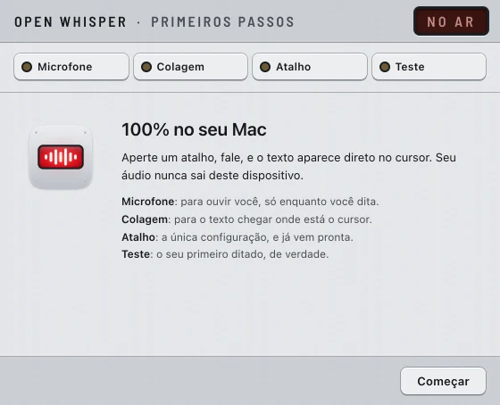
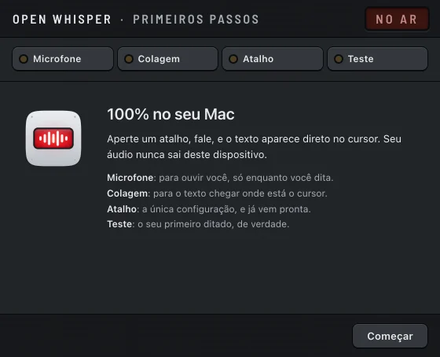
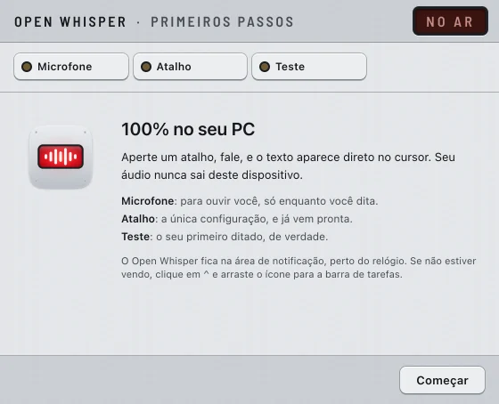
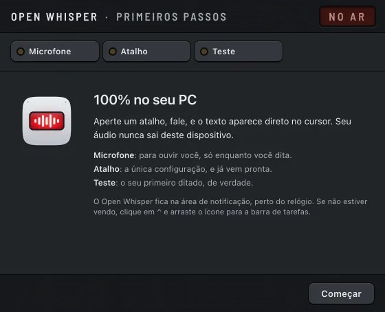
Microfone
É a única permissão sem a qual o ditado não funciona. A janela diz quando o microfone fica ligado (só enquanto você dita, nunca em segundo plano), onde a transcrição acontece (neste computador, sem internet) e o que sobra depois (nada: o áudio é descartado e nunca fica gravado em disco).
Mac
- Aperte Permitir o microfone.
- O macOS pergunta se o Open Whisper pode usar o microfone. Clique em Permitir.
- A janela mostra Microfone pronto. e passa para a próxima etapa.
Windows
O Windows não pergunta nada: são as configurações de privacidade dele que decidem se os apps podem usar o microfone.
- Aperte Verificar o microfone.
- Se nada estiver bloqueando, a janela mostra Microfone pronto. e passa para a próxima etapa.
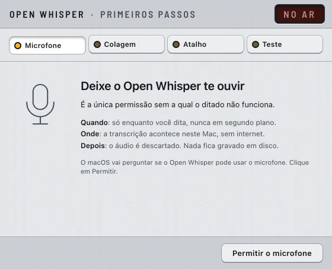
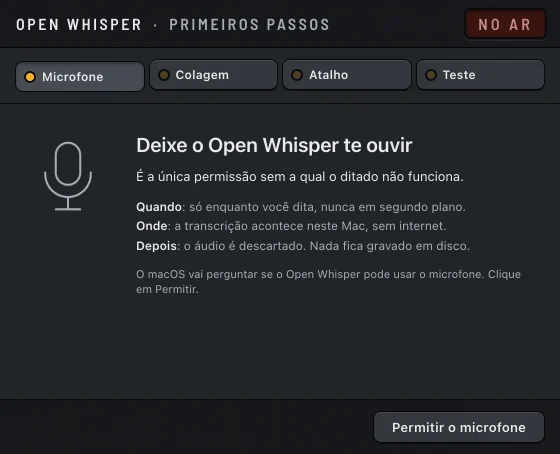
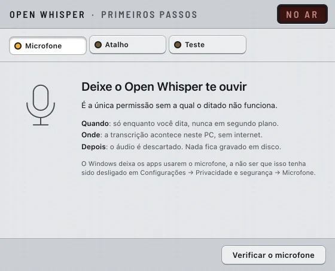
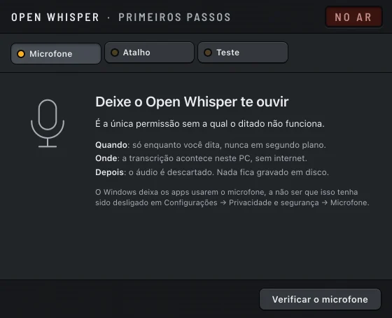
Colagem (só no Mac)
Com a permissão de Acessibilidade, o Open Whisper cola o texto por você. A janela diz o que ela faz (envia ⌘V para o app em que você está), o que não faz (não lê a sua tela nem o que você digita) e o que acontece sem ela (o texto vai para a área de transferência e você cola com ⌘V).
- Aperte Ativar colagem automática.
- O macOS oferece abrir os Ajustes do Sistema. Lá, em Acessibilidade, ative o Open Whisper.
- Volte para a janela. Quando ela enxerga a permissão, mostra Colagem automática pronta. e segue em frente.
Você também pode apertar Pular — eu colo manualmente. A configuração segue, e todo ditado fica esperando na área de transferência para você colar com ⌘V. Dá para ligar a colagem automática depois: veja Onde o texto vai parar.
No Windows essa etapa não existe.
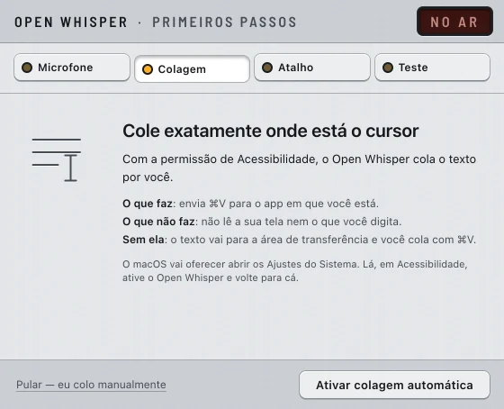
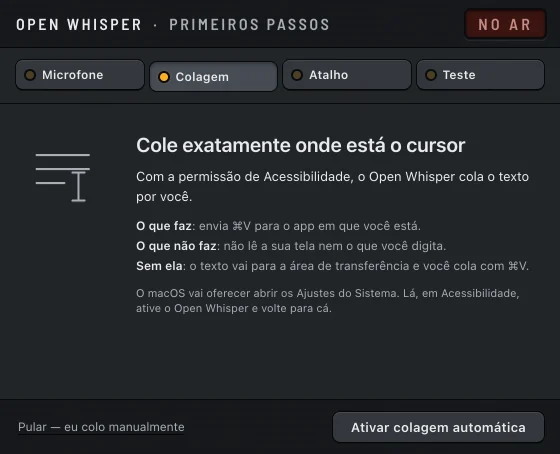
Atalho
O atalho já vem pronto: ⇧⌘Espaço no Mac, CtrlShiftEspaço no Windows. É a única configuração de que o Open Whisper precisa.
- Fique com o atalho que aparece, ou clique na tecla dele e pressione a nova combinação. Esc mantém o atual.
- Escolha o modo. Pressionar para falar grava enquanto você segura as teclas e transcreve ao soltar. Alternar: aperte uma vez para começar e outra para parar.
- Aperte Continuar.
As duas escolhas ficam salvas na hora. O atalho precisa de uma tecla modificadora; as regras, e as combinações que o sistema reserva para si, estão em Ajustes. Os modos estão explicados em Ditar.


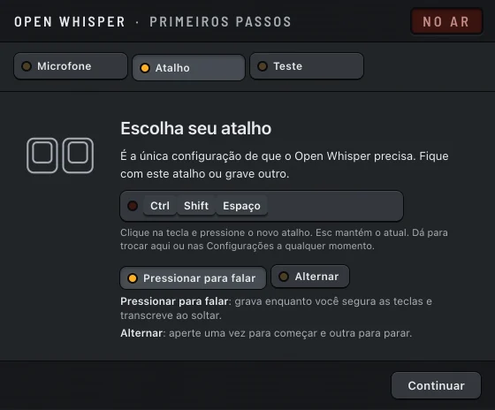
Teste
A última etapa é um ditado de verdade, colado no campo de teste da janela do mesmo jeito que é colado em qualquer app.
- Em Pressionar para falar, segure o atalho, diga uma frase e solte. Em Alternar, aperte o atalho, diga uma frase e aperte de novo.
- Veja o texto chegar no campo. A linha de status embaixo dele diz o que aconteceu:
| A janela diz | O que aconteceu |
|---|---|
| No ar. Pode falar. | Está gravando. |
| Transcrevendo… | Você parou; o texto está a caminho. |
| Chegou. Em qualquer app, o texto vai para onde está o cursor. | O texto chegou no campo. |
| O texto foi colado onde estava o cursor, fora deste campo. Clique no campo e tente de novo. | O cursor estava em outro lugar quando o texto chegou. |
| Nenhuma fala foi ouvida. Tente de novo, mais perto do microfone. | A gravação não tinha fala, então nada foi colado. |
| Cancelado com Esc. Nada foi transcrito. | Você apertou Esc durante a gravação. |
| Sem acesso ao microfone, o teste não grava. Ative-o na etapa Microfone. | Falta a permissão do microfone. |
Quando não dá para colar, o texto fica esperando na área de transferência e a janela avisa:
Mac
- O texto foi para a área de transferência. Cole aqui com ⌘V.
- A colagem automática está desligada, então o texto foi para a área de transferência. Cole aqui com ⌘V. Você pulou a etapa Colagem ou não deu a permissão.
Windows
- O texto foi para a área de transferência. Cole aqui com Ctrl+V.
A nota no pé da janela diz se o Esc cancela com o atalho e o modo que você escolheu. Com Pressionar para falar e CtrlShiftEspaço, ela diz Segurando este atalho, o Esc não cancela: com essas teclas, ele é do Windows. No modo Alternar, o Esc cancela. Nesse caso, solte as teclas para terminar. Veja Cancelar com Esc.
Qualquer outro problema aparece com a mesma mensagem da notificação correspondente: veja Ditar.
Abrir ao iniciar
Esta etapa também mostra a chave Abrir ao iniciar o Mac (no Windows, Abrir ao iniciar o Windows), desligada, a não ser que o sistema já estivesse com ela ligada. Ligue se quiser que o Open Whisper abra sozinho quando você entra no computador. Concluir a configuração nunca mexe nela. No Mac, ela só funciona com o app direto em Aplicativos.
Quando terminar, aperte Concluir. A janela fecha e a configuração está feita.
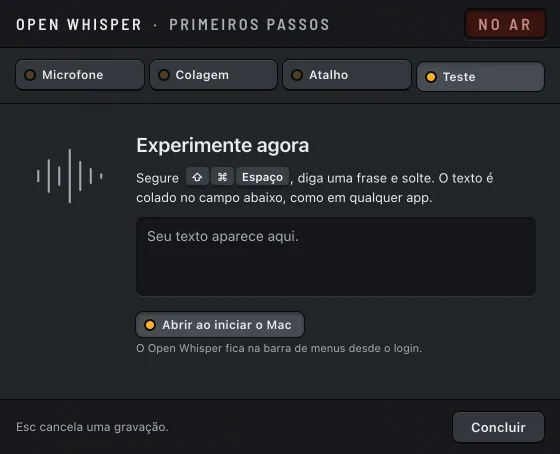
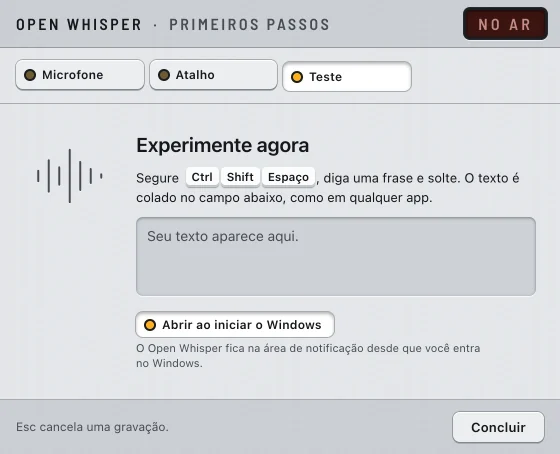
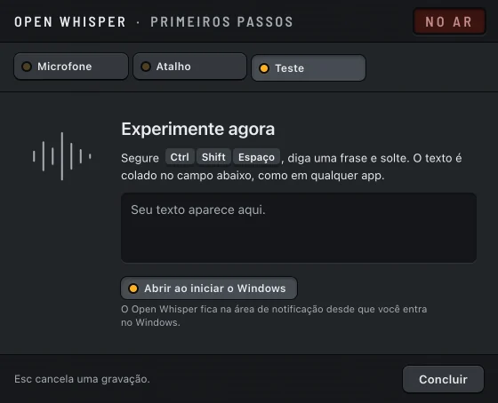
Se você fechar antes de concluir
Esc, ⌘. ou ⌘W fecham a janela (CtrlW no Windows). O que você já escolheu continua salvo: as permissões, o atalho e o modo. Só que a configuração não fica marcada como concluída, então a janela abre de novo na próxima vez que o Open Whisper iniciar. No Mac, quando o app reabre, ela vai direto para a primeira etapa que ainda falta.
Tudo o que a configuração define dá para mudar depois: o atalho, o modo e a abertura ao iniciar nos Ajustes, as permissões nas configurações do sistema.
Onde fica o ícone
O Open Whisper não tem janela principal. Depois da configuração, ele vive num ícone, e é pelo menu desse ícone que você chega a todo o resto: veja O ícone e o menu.
Mac
O ícone fica na barra de menus, no canto superior direito, perto do relógio. Não há ícone no Dock.
Windows
O ícone fica na área de notificação, perto do relógio. O Windows 11 costuma esconder ícones novos atrás do ^: se você não estiver vendo, clique no ^ e arraste o ícone do Open Whisper para a barra de tarefas, para enxergar quando ele está gravando.